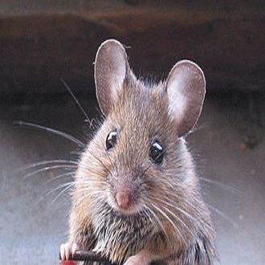

Emlősök
Az emlősök (Mammalia) a gerinces állatok egyik osztálya. Legfontosabb jellemzőjük, hogy utódaikat tejjel táplálják, amelyet az emlőmirigyek termelnek. Testüket általában szőr borítja, melegvérűek, és többségük elevenszülő. Az emlősök rendkívül változatos csoportot alkotnak: a néhány centiméteres cickányoktól a hatalmas kék bálnáig számos formában előfordulnak.
Az emlősök osztályán belül több jelentős rend különíthető el, például:
- tojásrakó emlősök (Prototheria)
- erszényesek (Marsupialia)
- méhlepényesek (Placentalia)

Emlősök
Az emlősök 225 millió évvel ezelőtt jelentek meg, a késő triászban. Az éjszakai rovarevők szerepét töltötték be, de már a jura közepén kezdtek egyre változatosabbakká válni.

Tojásrakó emlősök
A tojásrakó emlősök az emlősök egyik alosztályát alkotják. Jelenkori fajaik legfőbb jellegzetessége, hogy nem eleven utódokat ellenek, hanem lágy héjú tojásokat raknak.

Erszényesek
Az erszényesek az elevenszülő emlősök alosztályának egyik alosztályágát alkotják. Jellemzőjük: az újszülöttek „praktikusan embrionális” állapotban jönnek a világra.

Méhlepényesek
A méhlepényesekném a magzat méhen belül fejlődik. A kialakuló méhlepény biztosítja az embrió számára a megfelelő tápanyag- és oxigénellátást az anyai szervezetből.